Chapter 3 · Part 1 — Open Sesame!
“The fourth M thing must be out there,” said Annie.
Beside the door was a button with the word OPEN on it. Annie reached for the button.
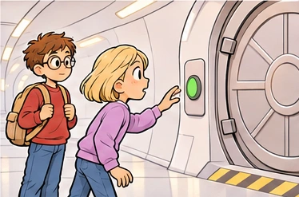
“Wait!” Jack her hand. “There’s no air on the moon. Remember?”
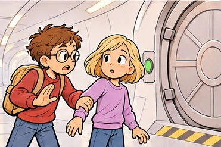
“Oh. Right. But we have to go out to find the M thing.”
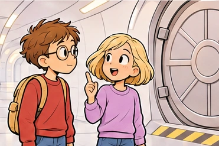
“Let’s see what the book says,” said Jack.
He pulled the book out of his pack. He flipped through it until he found a page that showed the of the moon. He read aloud:
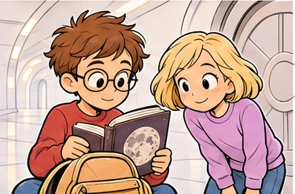
It takes fourteen Earth days to equal one day on the moon. No air protects the moon from the sun’s , so daytime heat reaches 260 degrees.
Jack looked at Annie. “I told you our blood would boil if we went out there,” he said.
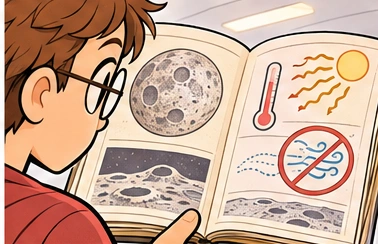
“Yuck,” she said.
Jack read from the book again:
Moon scientists wear , which have to keep them from getting too hot or too cold. They have , which provide air for two hours.
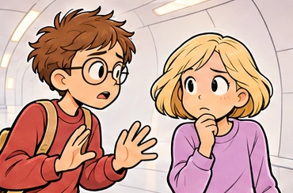
“Where do we get ?” asked Annie. She looked around then trotted back down the hall. “Maybe there … ?”
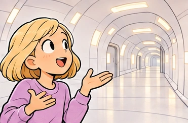
Jack was studying his map. “Let’s try the spacesuit storeroom.”
“Don’t look at the map,” said Annie. “Look at the real room!”
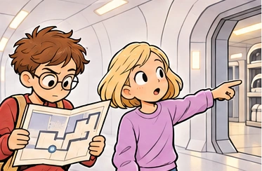
Jack glanced up. Annie was peering through a doorway off the hall.
“There’s a ton of space stuff in here!” she said.
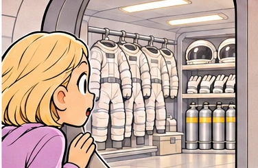
Jack went to look.
white suits hung from hangers. Air , helmets, gloves, and boots sat in neat rows on shelves.
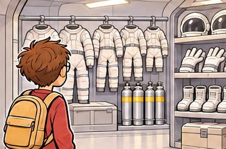
“Wow, it’s like the armor room in a castle,” said Jack.
“Yeah, with huge armor,” said Annie.
“Let’s pick out the smallest stuff,” said Jack. “The suits can go over our clothes.”
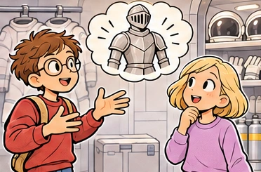
Annie found the smallest white suit. And Jack found the next smallest. They stepped into them.
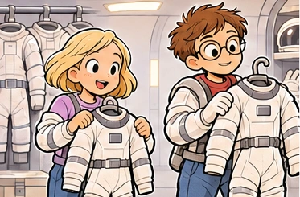
Then Annie locked Jack’s air tank into place.
“Thanks,” he said. And he did the same for her.
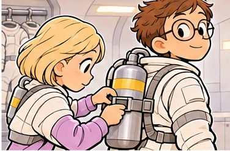
“Thanks,” she said.
“Gloves?” said Jack. He and Annie pulled on white gloves.
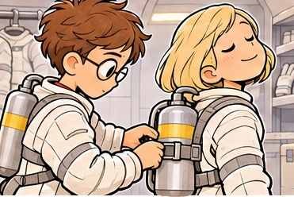
“Boots?” said Annie. They each pulled on a pair of huge white boots.
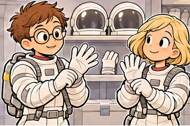
“Helmets?” said Jack. He reached for a .
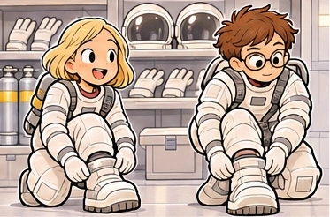
“Wow, they’re pretty light,” he said. “I thought they’d be like knights’ helmets.”
Jack and Annie put the helmets on. They locked each other’s into place.
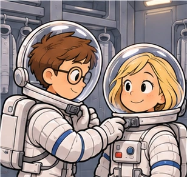
“I can’t move my head right or left,” said Annie.
“Me neither,” said Jack. “Let’s try walking.”
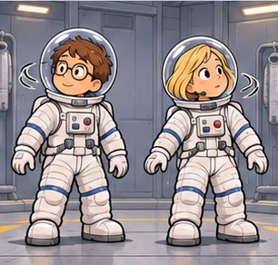
Jack and Annie moved around the room. Jack felt like a fat snowman.
“Close your ,” said Annie.
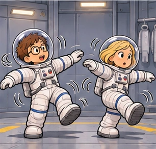
They both closed their see-through visors. Cool air filled Jack’s .
“I CAN BREATHE!” Annie yelled. Her voice boomed in Jack’s ears.
“Ow! Talk quietly,” Jack said. “We have two-way radios inside our helmets.”
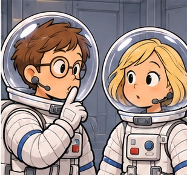
“Sorry,” Annie.
Jack put the moon book back in his pack. Then he slung the pack over his shoulder.
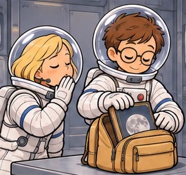
“Okay!” he said. “Remember, we only have two hours of air in our . So we need to find the fourth M thing really fast.”
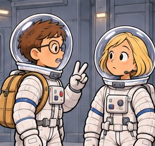
“I hope we can find it,” said Annie.
“Me too,” said Jack. He knew they could not go home until they did.
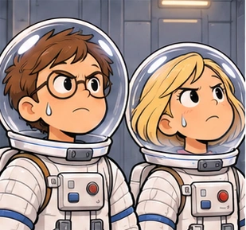
“Let’s go,” said Annie. She gave Jack a little push.
“Watch it. No goofing off,” he said. “We don’t want to fall over in these suits.”
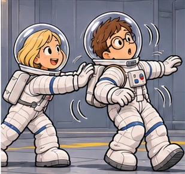
“Just go—go!” said Annie. She pushed him out of the room. They walked back to the .
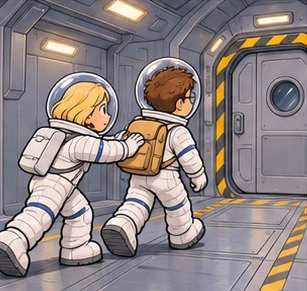
“Ready?” said Annie. “Open sesame!” She pressed the OPEN button. A door slowly slid closed behind them. A door opened in front of them.
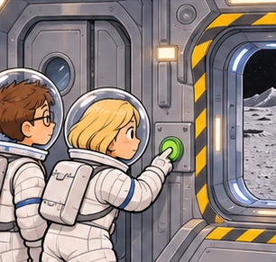
And Jack and Annie stepped out onto the moon.
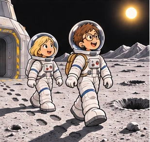